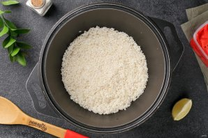
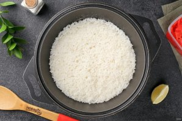
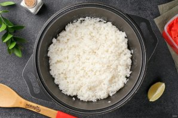
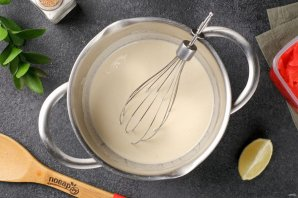
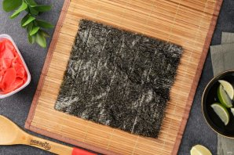
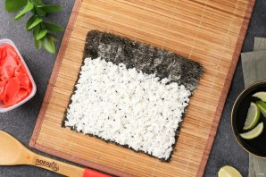
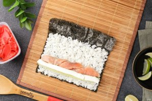
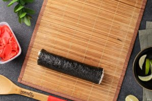
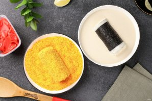
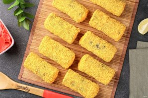

Подготовьте все ингредиенты.

Рис промойте и переложите его в казан или в кастрюлю с толстым дном.

Добавьте воду и после закипания варите под крышкой на небольшом огне 15 минут (в процессе рис не перемешиваем!). Затем снимите с огня и дайте постоять под крышкой ещё 15 минут.

Добавьте рисовый уксус и перемешайте лопаткой.
Подготовьте начинку.

Темпурную муку разведите холодной водой и добавьте соль по вкусу.

Расстелите коврик для формирования роллов. Сверху выложите нори гладкой поверхностью вниз.

Распределите ровным слоем отварной рис, не доходя до одного края около 2 см. На один лист нори понадобится примерно 150 граммов риса.

На рис, ближе к одному краю, выложите начинку: кусочки рыбы, огурец, нарезанный длинной соломкой и творожный сыр.

Аккуратно скрутите ролл при помощи коврика. Добавьте по краям немного риса, чтобы начинка не выглядывала.

Разрежьте каждый ролл пополам, затем окуните сначала в кляр, начиная с концов, а затем обваляйте в панировке.

Таким образом подготовьте все роллы.
Обжарьте роллы во фритюре со всех сторон, а затем выложите на бумажные салфетки. Разрежьте на кусочки и сразу же подавайте к столу.
Роллы темпура готовы. Приятного аппетита!